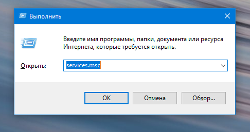
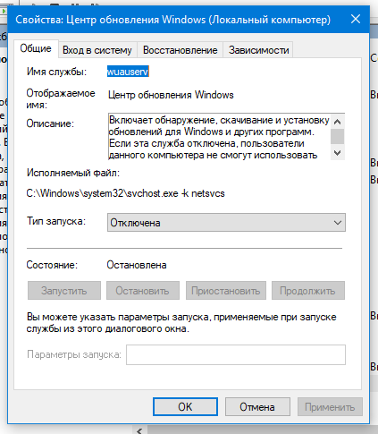
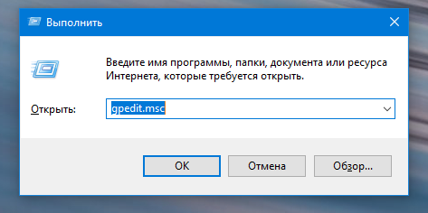
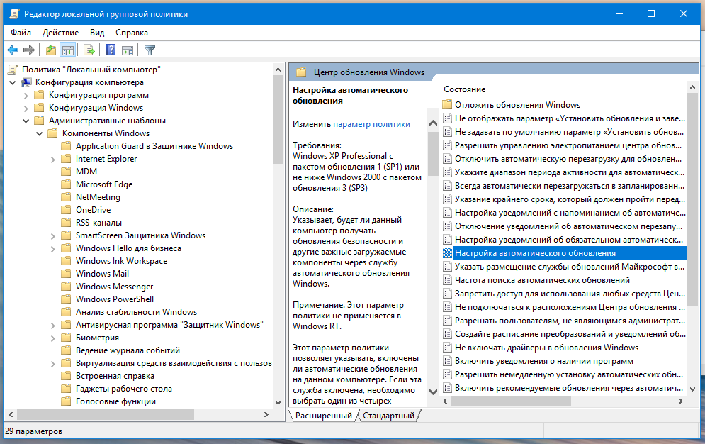
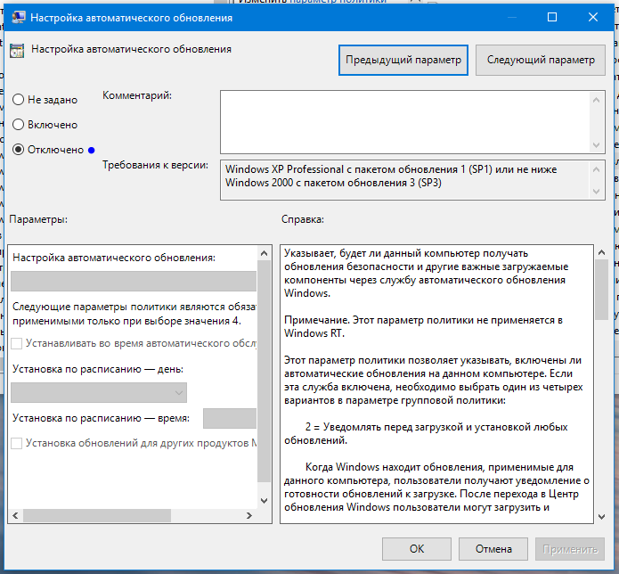

Пора обновится...Пора обновится...Да нет! Не пора!
Конечно не спорю, обновления полезны и закрывают дыры и прочие глюки в ОС, но частое обновление, ни кем не протестированное, зачастую вредит компьютеру и скажем так из за него приходится устанавливать ОС повторно. Отключим автоматические обновления. Нажмите "Win+R" и введите service.msc и нажмите Enter

Откроются службы, затем листайте в самый низ, найдите Центр Обновления Windows

Откройте и в пункте "Тип запуска" нажмите "Отключена" как показано на скриншоте

На этом не все. Также нужно отключить обновления в редакторе групповой политики. Жмем "Win+R" и вводим gpedit.msc и нажимаем Enter.

Откроется редактор, разверните Административные Шаблоны/Компоненты Windows как показано на скриншоте и листайте вниз, необходимо найти Автоматическое обновление Windows

Нажмите настройка автоматического обновления и как показано на следуйщем скриншоте, выбирете вариант "Отключено"

Готово. Обновления отключены навсегда. Не закрывайте редактор групповой политики, он нам еще пригодится!!!